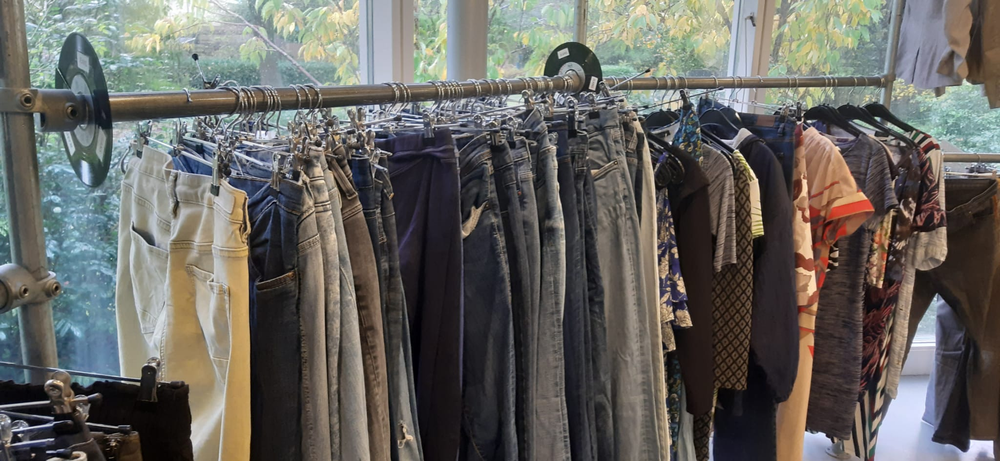

Repareren
Waarom?
Het is belangrijk om eerst te kijken of je oude/kapotte kleding en spullen gerepareerd of gepimpt kan worden. Zo hoef je geen nieuwe kleren te kopen. Dat is weer beter voor het milieu Als het niet meer gerepareerd kan worden of je wilt toch iets nieuws kan je ook daarvoor naar een 2e hands winkel gaan.
Repair Café
Elektra
Heb je spullen die het niet meer helemaal doen of moet er iets vervangen worden. Dan kan je bij het Het Elektra Repair Café langskomen en lossen de reparateurs het samen met je op. Je hebt hier geen eigen gereedschap voor nodig!
Op woensdag van 12.00 tot 17.00
Textiel
Heb je oude of kapotte kleding, die je graag nog wat langer wilt houden. Kom dan langs bij Het Textiel Repair Café! Hier staat van alles wat je nodig hebt om je kleding te repareren. Ook zijn er mensen aanwezig die je kunnen helpen.
Op donderdag van 12.00 tot 17.00
Nieuwe 2e Hands Kleding
Tweedehands kleding is goed voor het milieu. Zo hoeft er niet iets nieuws gemaakt te worde. Je geeft de kleding namelijk een 2e kans! Je bespaart er ook nog eens geld mee. Dus dat is voor jou erg voordelig. Soms kom je door 2e hands te shoppen ook nog eens goede vondsten tegen, waardoor jij een uniek kledingstuk hebt.
Er zijn verschillende winkels waar je deze kleding kan kopen.
Vind deze winkels